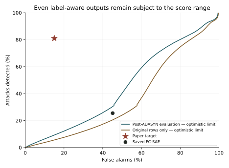
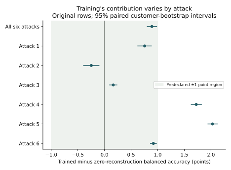

Reproducing an electricity-theft detector
What happened when we implemented the FC-SAE and LSTM-SAE models described by Takiddin et al. and tested their Table III results on the named Irish electricity data.
Abstract
We implemented the paper's fully connected simple autoencoder (FC-SAE), recording the choices needed where the method was incomplete. The audited run reached 40.18% balanced accuracy rather than 83%. We then bounded the performance of any Softmax reconstruction on the same prepared data: even outputs chosen with knowledge of the labels stay below 50.93%. This excludes a weight, seed, or cutoff change as a rescue under those fixed assumptions. The trained score nevertheless makes small, nonzero improvements over simple controls. The result is a conditional limit on this preparation and scoring combination, not a finding about author intent or every possible interpretation of the paper.
A return to the source confirmed that Softmax, MSE scoring, and the 0.58 cutoff are explicit. Two additional normalization readings still cap detection below 34% at that cutoff, versus 81% reported. A more permissive Sigmoid range left a different-cutoff rescue mathematically open on the complete evaluation, so we trained one small matched Sigmoid control. Even after enumerating every cutoff, it detected only 9.75% of attacks at at most 15% false alarms, or 25.39% with the score direction reversed. This closes cutoff rescue for that fitted model and sample—not every possible Sigmoid training procedure.
We then tested LSTM-SAE inside Table IV's reported 183-minute full-ISET training time on one V100. At the printed cutoff it detected 16.62% of attacks with 31.91% false alarms, versus 85% and 13% reported. At the paper's false-alarm rate, exhaustive cutoff selection recovered only 7.00% detection, or 23.02% after reversing the score. One V100 epoch took 143.88 minutes; ten epochs project to 23.98 hours. This excludes the reported result for this declared implementation inside the reported time. It does not prove unlimited-time impossibility or identify the authors' unpublished procedure.
1What are we trying to reproduce?
An autoencoder learns to copy its input. In this paper, the input is a day of electricity readings. The proposed detector learns from normal days, then treats a large copying error as evidence of theft. The idea is that an altered day should look unfamiliar and be harder to reconstruct.
Takiddin et al. compare five autoencoders and several other detectors. Their simplest proposed model is the fully connected simple autoencoder, or FC-SAE. We began with its ISET result in Table III, printed page 4116. This report now covers that complete FC-SAE row and one separately declared LSTM-SAE reproduction bounded by Table IV's 183-minute training claim. The other proposed-model rows remain incomplete. [1]
Our question was whether a reader could implement the written method, state the necessary assumptions, and obtain the reported result. No author implementation was available to us. We did not try configurations until one approached the published number.
2From the paper to the implementation
We read the complete paper, tried a small synthetic-data sandbox, and returned to the source before settling the implementation. The table below links the instructions to the code actually used. Page numbers are the paper's printed numbers, not the PDF viewer's page counter. [2]
| What we read | What we implemented | Code |
|---|---|---|
| Section III-A, p. 4109: the input layer has 48 neurons. | One complete day of 48 ordered half-hour readings per example. Incomplete or duplicated days are excluded under our documented parsing choice. | Daily profiles; input shape |
Section IV-C, p. 4115: encoder widths 400, 300, 200, 100, with opposite order in the decoder’s part. | Four encoder layers followed by four decoder layers, retaining both central 100-unit layers. | Layer widths; construction |
| Table I, p. 4115: Adam, dropout 0.4, sigmoid hidden activation, Softmax output. | Those settings, with dropout after each hidden layer. Dropout placement and Adam's learning rate are explicit implementation choices. | Model and optimizer |
Section II-C, p. 4109: zero mean and unit variance, a 2:1 benign split, and ADASYN on the test set. | Joint feature-wise scaling; disjoint training/test customers; synthetic benign test profiles generated after the split. We kept the unusual test-resampling step. | Scaling; split and resampling |
| Equation (7) and Section III-A, p. 4109: minimize reconstruction error using benign examples. | Mean squared error between each benign input and its reconstruction. No attack example is used for fitting. | Loss; training call |
| Section IV-B, p. 4115: the FC-SAE threshold is 0.58. | Average the squared error over 48 coordinates. A score strictly greater than 0.58 is an attack. | Scores and metrics |

The configuration in the run's model file is short enough to inspect directly:
"fc_sae": ModelSpec(
"FC-SAE", (400, 300, 200, 100), (100, 200, 300, 400),
"Adam", 0.4, "sigmoid", "softmax", 0.58, "mse", "higher",
),Where the paper did not give a complete recipe
Some instructions cannot be executed literally. Attack 3 subtracts a positive duration from its start time, reversing the stated interval. The threshold-selection description also refers to an ROC calculation over training data defined as benign-only, without explaining where the attack labels come from. We preserved those problems and documented our executable choices before the run.
- Attack 3: choose a duration of 4–24 hours, then a start that keeps the interval within the day; zero both half-hour readings in each selected hour.
- Customer population: use all 4,225 meters labeled residential. The paper says roughly 3,000 but does not identify a subset.
- Test attacks: include attacks derived only from held-out customers, following the paper's statement that test customers are unseen.
- Missing training settings: use the fixed settings below. We used the published final architecture and threshold; we did not reproduce the undocumented search that selected them.
The source specification lists the other reasonable readings we have not tested in this run. We call this a reproduction attempt with explicit interpretations—not a verbatim execution of a fully specified method. [2]
3Data and experimental setup
We used the CER Smart Metering Project's 2009–2010 electricity data, the source of ISET. The six consumption archives match the official file checksums. The official allocation-table serialization was unavailable; an explicitly approved CSV copy was independently checked against another public workbook. All 6,445 customer-type mappings agreed after the declared blank/zero normalization. This file-format substitution was recorded before training. [3]
Each retained day gives one benign profile and six altered profiles. The six attacks reduce readings by a fixed or varying fraction, zero a time interval, replace a day by its mean, scale that mean, or reverse the day's order. They are constructed attacks, not observed theft labels.
| Training / test customers | 2,816 / 1,409; no customer appears on both sides |
|---|---|
| Training examples | 1,500,523 benign daily profiles |
| Original test examples | 750,767 benign + 4,504,602 attack profiles |
| After test-set ADASYN | 4,380,387 benign + 4,504,602 attack profiles = 8,884,989 total |
| Synthetic benign examples added | 3,629,620; integer allocation leaves the classes nearly, not exactly, equal |
| Seed / batch size / Adam learning rate | 20260824 / 32 / 0.001 |
| Stopping rule | At most 100 epochs; after at least 10 epochs, stop after five without training-MSE improvement of at least 0.000001; restore the best weights |
| Observed stopping | 28 epochs; restored epoch 23; best recorded training loss 1.74779 |
| Compute | One Tesla P100 GPU; fitting 8 h 02 min 46 s; scoring 11.12 s; whole job 9 h 14 min 27 s |
Joint scaling uses information from outside the training subset, and ADASYN changes the test distribution. We retained those operations to test this reading of the paper, not because we recommend them for an independent evaluation. A conventional train-only preprocessing control would be a separate experiment.
There was one training attempt. It was not restarted or tuned after its result was seen. Its configuration, training history, and data metadata are preserved.
4The reported result and our result
| Measure | Paper | Our run |
|---|---|---|
| Detection rate | 81.00 | 25.48 |
| False-alarm rate ↓ | 15.00 | 45.13 |
| Specificity | 85.00 | 54.87 |
| Precision | 81.00 | 36.73 |
| Balanced accuracy | 83.00 | 40.18 |
| F1 | 81.00 | 30.09 |
| AUC | 81.00 | 39.40 |
In this evaluation, the model detected about 25 of every 100 attack profiles and raised an alarm on about 45 of every 100 benign profiles. The test set includes synthetic benign examples added by the paper's stated resampling step; these are not counts of independent households.
Here, detection rate is the fraction of attack profiles flagged. False-alarm rate is the fraction of benign profiles flagged. Specificity is one minus false-alarm rate; precision asks how many alarms are correct; F1 combines precision and detection. The paper's ACC is balanced accuracy: the average of detection and specificity. AUC measures how well the score ranks attacks above benign profiles across cutoffs; 50% is chance-level ranking.
Detection fell short by 55.52 percentage points, balanced accuracy by 42.82 points, and AUC by 41.60 points. These are large discrepancies. All seven values come from the same saved scores and evaluation population. [4]
| Actual profile | Called normal | Called attack |
|---|---|---|
| Benign | 2,403,359 | 1,977,028 |
| Attack | 3,356,651 | 1,147,951 |
5Could the result be a recording or cutoff error?
Checking the saved experiment
The predeclared audit recomputed every metric and confusion count with zero discrepancy. It checked the configuration and artifact hashes. Additional checks scanned every saved numeric array for NaN or infinity, verified customer separation and row identities, replayed the stopping rule, and reloaded the model weights.
Fresh inference on 256 examples, spread across benign, six attack, and synthetic-benign groups, agreed with the saved scores within 0.00000012. All sampled predictions agreed. This was a sample of fresh inference, not a second full scoring run. These checks reduce the likelihood of errors in the tested chain; they do not exclude an incorrect interpretation of the paper. [5]
Trying every cutoff on the same scores
We enumerated 7,202,671 threshold candidates. This deliberately gives the evaluation labels the opportunity to choose the most favorable cutoff. It is a diagnostic upper limit for the saved scores, not a valid replacement for the paper's test procedure.
| Diagnostic | Best balanced accuracy | Meaning |
|---|---|---|
| Higher error means attack | 50.00072% | No threshold on these scores reaches the reported 83%. |
| Reverse the direction | 60.21% | Even treating lower error as suspicious leaves a large gap. |
In the printed direction, even the closest detection/false-alarm pair misses at least one of the two reported values by 40.75 points. The threshold is therefore not the whole explanation for this run. A different training or data procedure would produce different scores, to which this fixed-score limit does not apply.
How much did the reconstruction change the score?
The mean score was 1.19676 for benign profiles and 0.81304 for attack profiles. Higher error triggers an alarm, so the aggregate ordering often points the wrong way. This does not imply identical behavior for all six attack types.
We also compared the trained score with a rule that reconstructs every input as zero. That rule measures the average squared size of the input and requires no learning. Its scores had Pearson correlation 0.999253 with the trained scores.
| Score | Balanced accuracy | AUC |
|---|---|---|
| Zero reconstruction | 39.00% | 37.23% |
| Trained FC-SAE | 40.18% | 39.40% |
| Closest allowed Softmax-domain reconstruction, per example | 40.20% | 39.35% |
The trained gain over zero reconstruction is 1.18 balanced-accuracy points and 2.17 AUC points. It is not zero. Close score correlation does not prove that the remaining difference contains no useful information.
The third row chooses the nearest nonnegative vector whose entries sum to one. By itself it supplies a lower bound on reconstruction error, not an upper bound on classification accuracy. A model need not minimize every example's error to distinguish classes well. The later performance bound uses both the smallest and largest possible errors and deliberately chooses them in the model's favor.
A mistake in our additional checker
The first supplemental check compared a short final chunk of original data with a longer resampled slice extending into synthetic rows. That checker failed. We corrected the slice boundary and preserved both reports; the corrected checker passed all 65 checks. No training data, weights, scores, or reported metrics changed.
First checker report · Corrected checker report. A separate optimizer-state warning concerned unused optimizer slots during inference; fresh weight loading and the sampled predictions passed.
6What the earlier small experiments showed
Before this full-data run, we used a separate synthetic-data sandbox to understand the questions. It used 48-step toy profiles, small models, one seed, and fixed training settings. The script took 60.06 seconds. It was not an ISET reproduction. [6]
| Question | Observation | What remained open |
|---|---|---|
| Can simple statistics distinguish the toy attacks? | The strongest tested single feature for attacks 1–5 had AUC 0.993–1.000. Order-insensitive summaries were at chance for reversal. | Whether equally simple rules work on the actual ISET evaluation. |
| Does a small recurrent model do better on a temporal disruption? | Block-disruption AUC: dense autoencoder 0.950; LSTM autoencoder 0.521. Their training losses were 0.345 and 0.944. | The LSTM fit much worse. The comparison does not separate optimization failure from lack of a useful recurrent advantage. |
| Do bounded output layers constrain reconstruction? | Standardized toy profiles lay outside the allowed output sets, giving positive minimum reconstruction errors. | A reconstruction constraint alone does not establish a detection-performance ceiling. |
| Which direction should a Gaussian reconstruction probability use? | Probability decreased as reconstruction error increased. | The VAE direction conflict may be a wording error. No trained VAE result is reported here. |
These observations motivated careful checks of output ranges, simple scores, and temporal structure. They did not select a favorable interpretation after seeing the full-data result. The small dense and recurrent models were not the full paper architectures.
7Could any allowed reconstruction reach the target?
We asked: even if we could choose the most favorable allowed output separately for every attack, could enough attacks cross the detection threshold?
The failed run left a question: perhaps different weights would give much better scores. We tested that possibility without training another model. For each input day, we calculated the smallest and largest copying error permitted by the output layer.
A Softmax reconstruction has 48 nonnegative values adding to one. Its smallest error comes from the nearest vector in that set; its largest comes from putting all the output mass on the input's smallest coordinate. Allowing zero coordinates makes this set slightly more generous than a finite Softmax output. [7]
We then gave every attack its largest possible error and every benign day its smallest. This imaginary detector knows the answers and may choose each reconstruction independently, even when a real network could not. If this advantage is insufficient, no choice of shared weights or training seed can fix the gap while the preparation, output restriction, and MSE score stay the same.
| Quantity | Paper | Optimistic limit |
|---|---|---|
| Balanced accuracy, any cutoff | 83% | 50.93% |
| Ranking AUC | 81% | 45.11% |
| Detection with false alarms at most 15% | 81% | 9.25% |
| Detection with false alarms at most 15.5% | At least 80.5%, allowing rounding | 9.54% |

At the printed cutoff 0.58, even the imaginary detector reaches at most 29.58% detection and must falsely flag at least 44.28% of benign profiles. Allowing the opposite score direction still gives an upper limit below 64.56% balanced accuracy and 35.82% detection at 15% false alarms. The target is also excluded when synthetic benign rows are removed.
The calculation and its assumptions
For input x and reconstruction r, the score is ||x − r||² / 48. Let L be the squared distance to the closed probability simplex, divided by 48, and U = (||x||² + 1 − 2 min(x)) / 48. Convexity puts the largest distance at a simplex vertex. At cutoff t, detection cannot exceed the fraction of attack rows with U > t; false alarms cannot be lower than the fraction of benign rows with L > t.
We enumerated 8,212,855 boundaries on the label-aware vector. Endpoints were evaluated in float64 and padded outward by 0.00001 × (1 + U). Every saved trained score fell inside its range. This is a conservative numerical evaluation of an analytic bound, not certified interval arithmetic. It applies to these fixed prepared inputs and MSE scoring—not to another dataset, normalization, output domain, or score.
This changes the conclusion. More seeds, wider hidden layers, different optimizers, or longer training cannot reach the target under this fixed combination. We do not need to extrapolate a learning curve or estimate years of search to establish that conditional limit.
7a. Did our interpretation create the obstacle?
We asked: are the restrictions causing this limit actually in the paper, or did we introduce them when filling in missing details?
We re-read the complete paper and visually checked the relevant pages. Softmax is specified for FC-SAE in Table I and the text on p. 4115. MSE and the higher-error alarm direction are explicit on pp. 4109 and 4114; the FC-SAE cutoff is 0.58 on p. 4115. Those choices were not invented by our implementation. Standardization to zero mean and unit variance is also stated, but which rows and coordinates supply its statistics is not. [9]
We therefore tested two additional readings of normalization. Each uses statistics from the complete original population before the split. The reconstruction bound then covers all 4,504,602 held-out attack rows, with no fitting or new seed.
| Normalization with Softmax output | Detection ceiling |
|---|---|
| Existing reading: separate statistics for each half-hour coordinate, pooling benign and attack rows | 29.58% |
| One shared mean and standard deviation across all readings | 29.81% |
| Separate coordinate-wise statistics for benign rows and pooled attack rows | 33.96% |
The last interpretation is weaker: it uses class membership to prepare the inputs and is not presented as a deployable procedure or what the authors did. We retain it to make the sensitivity check explicit.
Neither tested alternative rescues the detection rate. Even adding synthetic benign examples cannot improve the fraction of these same attacks detected at 0.58. This extends the conditional exclusion across these three preparations; it does not exhaust every reasonable normalization, population, or attack-generation procedure.
7b. Would changing Softmax to Sigmoid change the answer?
We asked: does changing the output layer merely move the score a little, or does it remove the restriction that made the target unreachable?
Softmax forces all 48 reconstructed values to share a total of one. Sigmoid allows each value independently to range between zero and one. Changing one word in the code can therefore change the allowed reconstruction space substantially. Neither output range can reproduce negative standardized values exactly.
We first changed only the allowed range in the calculation, using the existing normalization. This first calculation did not train a Sigmoid model. Sigmoid is listed among the paper's searched output options, but it is not the selected FC-SAE output in Table I.
| Allowed range and alarm rule | Detection at 0.58 | Detection at ≤15% false alarms, any cutoff | Does this bound exclude the 81% / 15% target? |
|---|---|---|---|
| Softmax; flag high error | 29.58% | 5.60% | Yes |
| Sigmoid range; flag high error | 95.73% | 59.99% | Yes, for the combined target on these original rows |
| Sigmoid range; instead flag low error | Not evaluated at the printed cutoff | 94.04% | No—but no trained model has demonstrated it |
Sigmoid's optimistic detection alone can pass 81%, but detection alone is not the claim: false alarms must also remain low. At 0.58, at least about 41.1% of original benign rows must be falsely flagged. Even choosing a different cutoff cannot meet both targets in the printed direction on these rows.
The larger output range also raises the original-row balanced-accuracy ceiling from 50.16% to 80.84%. That is a change in the limit, not an observed improvement from training. With both Sigmoid and reversed scoring, the detection/false-alarm pair is no longer excluded by this original-row calculation. This is important counterevidence to a universal claim about autoencoders, but changes two explicit parts of the stated FC-SAE recipe.
Escaping a bound means “worth investigating,” not “we now know it works.” A permitted target is not a reproduced target. On the complete prepared evaluation, including synthetic benign rows, the high-error Sigmoid range permits up to 85.33% detection at at most 15% false alarms; reversing permits up to 93.77%. Those are label-aware upper limits, not trained-model results. At the printed cutoff 0.58, however, even the best allowed high-error output must falsely flag at least 29.67% of benign rows, so the printed procedure remains excluded.
Changing MSE to summed squared error or RMSE cannot change ranking or the all-cutoff ROC curve: these only rescale the same ordering. A genuinely different score or output range is a different question.
7c. Did a genuinely trained Sigmoid model realize that opening?
We asked: if the same FC-SAE is genuinely retrained with a Sigmoid output, can any cutoff on its learned scores reach 81% detection while holding false alarms to 15%?
We ran a deliberately small paired control, not another full reproduction. Softmax and Sigmoid kept the same 48-400-300-200-100-100-200-300-400-48 architecture, 450,448 parameters, hidden activations, dropout, optimizer, fitting rows, update budget, and identical starting weight arrays. Only the final activation differed. Each model fitted 2,048 benign rows for ten epochs and was selected using 1,024 separate benign calibration rows. The held-out evaluation had 12,119 rows: 6,144 attacks, 1,024 source benign days, and 4,951 synthetic benign rows. [11]
| Fitted model and alarm rule | Detection at FA ≤15% | Detection at FA ≤15.5% | Best balanced accuracy | AUC |
|---|---|---|---|---|
| Softmax; flag high error | 8.64258% | 8.83789% | 50.05667% | 37.68698% |
| Sigmoid; flag high error | 9.74935% | 9.99349% | 50.33353% | 37.70499% |
| Softmax; flag low error | 25.52083% | 26.12305% | 61.48292% | 62.31302% |
| Sigmoid; flag low error | 25.39063% | 25.81380% | 61.64614% | 62.29501% |
The small learned rescue failed. For the fitted Sigmoid high-error scores, at most 896 of 5,975 benign rows may be false alarms. At that operating point, only 599 of 6,144 attacks are detected. Predictions can change only when the cutoff crosses a saved score; all 12,060 distinct ROC boundaries were evaluated. There is no untested cutoff between them that supplies the missing detections.
At the paper's 0.58 cutoff, this fitted Sigmoid control detected 25.24414% of attacks with 47.02929% false alarms. A label-blind cutoff obtained only from benign calibration data gave 7.12891% detection and 9.92469% false alarms. Neither is the reported pair.
This is not a universal Sigmoid impossibility proof. Sigmoid's benign calibration MSE improved from 1.61028 after epoch 1 to 1.33863 after epoch 10, and its best checkpoint was the last epoch tested. We have not shown a long-run plateau, a result over other weights or samples, or that more data and training cannot change the ranking. What is proved is narrower: no cutoff rescues these two fitted score vectors on this sampled evaluation.
7d. Can LSTM-SAE produce its row inside the paper's reported time?
We asked: if we give the written LSTM-SAE the full data and exactly Table IV's 183-minute training budget on a favorable period-appropriate GPU, does it produce the reported Table III result?
The paper reports 183 minutes for full-ISET LSTM-SAE training. It identifies Keras Sequential but does not report the hardware, GPU count, epoch count, batch size, software versions, stopping rule, timing boundary, or repetitions. Contemporary Texas A&M records list K80 and V100 resources. We therefore selected one V100-16GB as a favorable single-device proxy—never multiple GPUs or newer A100/H200 hardware. Availability is not evidence of which machine the authors actually used. [12]
The executable source reading uses the paper's 500- and 300-unit LSTM encoder, 300- and 500-unit decoder, Sigmoid activations, dropout 0.2, Adam, MSE, batch 32, the same 1,500,523 benign fitting profiles and 8,884,989 scored profiles, and seed 20260824. Because the paper does not specify the recurrent decoder schedule, the declared completion puts the final encoder state at the decoder's first step, then zeros, and initializes only the first decoder layer from the encoder state. That choice was frozen before the result. Paper, code, contract, and finding [12].
| Measure | Paper | Our run |
|---|---|---|
| Detection rate | 85.00 | 16.62 |
| False-alarm rate ↓ | 13.00 | 31.91 |
| Specificity | 87.00 | 68.09 |
| Precision | 85.00 | 34.87 |
| Balanced accuracy | 86.00 | 42.35 |
| F1 | 85.00 | 22.51 |
| AUC | 82.00 | 40.30 |
This is not a small numerical miss. In the paper's direction the score ranks attacks worse than chance. Reversing the direction improves AUC only to 59.70%.
| Alarm rule | Best detection at FA ≤13% | Shortfall from 85% | AUC |
|---|---|---|---|
| Paper direction: high error means attack | 7.00% | 78.00 points | 40.30% |
| Favorable diagnostic reversal: low error means attack | 23.02% | 61.98 points | 59.70% |
We evaluated all 7,036,998 distinct score boundaries. No cutoff recovers the reported operating point. In the favorable reversed direction, reaching 79.34% detection requires 61.91% false alarms—not 13%. This means threshold selection and score orientation cannot explain the fixed fitted result. A materially different model would have to produce a materially different ranking.
| Updates completed in 183 minutes | 59,464: one full epoch plus 26.81% of epoch two |
|---|---|
| Measured V100 full epoch | 143.88 minutes |
| Earlier measured-throughput A16 projection | 166.38 minutes per full epoch |
| Measured V100 advantage | about 1.16 times faster—not an order-of-magnitude rescue |
| Ten epochs at measured V100 throughput | 23.98 hours before scoring, or 7.86 paper-time budgets |
| Full scoring time | 35.16 minutes for 8,884,989 rows |
The paper does not report an epoch count. Therefore, the runtime conclusion concerns our predeclared ten-epoch completion: it cannot fit inside 183 minutes on the measured implementation. We do not attribute a ten-epoch claim to the authors.
What longer training can and cannot explain. The target is excluded for this implementation inside the paper's time and for every cutoff of the resulting scores. The reconstruction loss was still decreasing, so this is not an unlimited-time impossibility theorem. However, the target would require a 61.98-point detection improvement even after favorable score reversal, a separate two-epoch sampled fit showed the same qualitative behavior, and ten epochs require roughly eight reported-time budgets. Ordinary additional training has no observed trajectory toward the published operating point.
Our bounded conclusion: the reported LSTM-SAE result did not arise from this declared implementation within the paper's reported 183-minute training budget on one V100. No cutoff or score-direction reversal rescues the fixed fitted scores. This makes ordinary additional training an implausible explanation; it does not identify an unpublished implementation, reporting error, fabrication, or author intent.
8Did the fitted score do anything useful?
Yes, there are small beneficial changes—but not enough to overcome the limit above. On original customer rows, the trained score increases balanced accuracy over zero reconstruction by 0.89 points. It does so mainly by reducing false alarms; attack detection actually decreases. The synthetic test rows change the aggregate comparison, so we show this original-row view separately.
| No-training comparison | Accuracy gain, points | Conditional 95% interval |
|---|---|---|
| Zero reconstruction | +0.891 | [0.805, 0.981] |
| Uniform Softmax reconstruction | +0.853 | [0.770, 0.941] |
| Nearest allowed reconstruction | +0.030 | [0.009, 0.051] |
All three aggregate intervals lie within the recorded ±1-point region. That supports small average differences under this particular criterion, not exact equality or uniformly negligible effects. The criterion was set before these measurements but after the initial result was known. The intervals hold the model, split, scaler, and generated attacks fixed and assume exchangeable customer clusters.

A check against the “nothing learned” explanation
Near-perfect overall correlation hid some distinctions. Within 100 similar-energy bands on all original rows, the trained score's pair-weighted AUC was 65.24%, versus 49.63% for energy alone. These are within-band rankings, not the overall AUC in Table III and not an exact conditional-independence test.
We then recorded a small exploratory control: sample 10,000 source days with all six attack siblings, and compare the trained score with two additional no-training reconstructions in the same energy bands. No model was fitted. [8]
| Score | Within-energy-band AUC |
|---|---|
| Input energy | 49.74% |
| Uniform constant reconstruction | 55.02% |
| Nearest allowed reconstruction | 62.18% |
| Trained FC-SAE | 65.49% |
The fitted score is not interchangeable with these simple rules. It ranks better within the bands, although this does not prove that another simple rule could not match it or identify the paper's claimed architectural mechanism. A small useful difference and an unattainable published target can coexist.
9What might explain the mismatch?
The output-domain check closes one large family of explanations: a different seed or better optimization cannot rescue the target while the prepared inputs and Softmax/MSE scoring remain fixed. It does not tell us which assumption differs from the authors' experiment.
| Possible explanation | Evidence so far | Useful next distinction |
|---|---|---|
| The prepared inputs and output/scoring combination limit performance | The label-aware bound excludes the reported target, for every weight and seed under the fixed assumptions. Two further normalization readings still cannot reach detection at 0.58. | Separate the remaining data assumptions from changes to explicit output and scoring choices. |
| The cutoff is the main problem | Ruled out for these fixed scores: every cutoff still falls short, including reversed direction. | Separate changes to the score itself from changes to its cutoff. |
| A data, preprocessing, or source-reading choice matters | Softmax and MSE are explicit; the normalization statistics are not. Two additional scalings do not rescue detection at 0.58. A complete-data Sigmoid range leaves another-cutoff rescue open, but one small genuinely fitted Sigmoid model did not realize it. | Freeze the finite remaining source-supported model and data interpretations before further full runs. |
| Optimization or run-to-run variation explains the gap | Cannot explain FC-SAE under the fixed geometric bound. LSTM-SAE is one seed, but its favorable reversed score remains 61.98 detection points short at the paper's false-alarm rate. | Do not repeat seeds without a predeclared reason that could plausibly alter the score ranking by that scale. |
| Different hardware explains the LSTM-SAE result | The measured V100 epoch is only 1.16 times faster than the A16 projection. A ten-epoch completion projects to 23.98 hours, not 183 minutes. | Hardware no longer explains this declared completion; undocumented epochs, batching, model code, or a different procedure remain possible. |
| The task offers little benefit from extra architecture | FC-SAE aggregate gains are small, and the LSTM-SAE paper-time row is poor, but these are not a matched FC-versus-LSTM causal contrast. | A matched component test and temporal-destruction control would be needed to identify the claimed recurrence mechanism. |
| The paper omits a consequential procedure or contains a reporting error | Missing settings and contradictory instructions make this possible; a reproduction failure cannot identify what the authors ran. | Look for source-supported clarifications or author artifacts. Do not infer undocumented code from whichever change improves our score. |
Our full explanation register also records the temporal-model alternatives: underfitting, an inadequate toy test, dense models already using fixed time positions, and differences in activation, capacity, or optimization being mistaken for a recurrence effect.
10What this study cannot yet conclude
Numerical result: neither audited proposed-model result reproduced its Table III row. Mechanism: FC-SAE has nonzero score effects, but the paper's recurrence explanation remains untested by a matched comparison. Attainability: the FC-SAE target is impossible under the fixed prepared inputs, Softmax output, and MSE score. The LSTM-SAE target is not attained by its declared implementation within the paper's 183-minute training time, and no cutoff rescues its fitted scores.
There are no seed-level confidence intervals here. Many rows share a customer or an original profile; synthetic examples add further dependence. Treating all 8.9 million rows as independent would overstate precision. A narrow interval for one fixed model would not, by itself, rule out another fitted model.
The complete-evaluation bound concerns every allowed Softmax reconstruction on the fixed prepared inputs. The follow-up extends the fixed-cutoff detection exclusion to two more normalization readings on unchanged attacks. The first range table concerns original rows; the subsequent full-evaluation range check and small trained control are explicitly separate. Untested normalizations, customer populations, data representations, longer Sigmoid training, and scoring procedures remain outside these conclusions. For LSTM-SAE, the loss was still decreasing and intermediate full-population score checkpoints were not saved; the run therefore does not prove unlimited-time impossibility. It does directly test the paper's reported time for this declared method. No claim about intent or the unobserved author implementation follows.
The previous electricity notes and report contain older exploratory runs under different assumptions, including omitted test-set ADASYN. They remain available, but they are not silently counted as additional seeds of this experiment. The water-network study is separate evidence and is not used to strengthen this finding.
11What would be worth checking next?
The source review, complete Sigmoid range calculation, small fitted Sigmoid pair, and one full-data paper-time LSTM-SAE execution are complete. The full paper has not been formally reproduced: FC-SAE has one complete clean-reader anchor, while LSTM-SAE has one separately bounded 183-minute execution. Earlier all-model breadth remains exploratory because later fidelity work quarantined it.
- Test the claimed mechanism separately. Compare matched FC/LSTM models and destroy temporal structure under a predeclared effect criterion. A source-configured ranking alone cannot identify recurrence as the cause.
- Finish the remaining proposed Table III family. Decide whether FC-VAE, LSTM-VAE, and LSTM-AEA clean-reader anchors have enough information value to justify their measured costs and source ambiguities.
- Complete only discriminating parts of Tables IV and V. The new timing result already constrains LSTM-SAE. Reuse preserved eligible weights where table identity permits; do not rerun rows that answer no remaining question.
- Return to Table II's literal failure. The SGCC source supplies 1,034 daily values while the models require 48 half-hour inputs. Execute only the finite source-supported mappings frozen before outcomes; do not call any repair literal.
The remaining FC-VAE, LSTM-VAE, LSTM-AEA, matched-mechanism, and table experiments have not been run as clean-reader confirmatory results on this page. No option is automatically next. Before cluster execution, its exact question, model, data identity, seed, statistical unit, compute budget, promotion rule, and stopping rule must be frozen and reviewed.
Conclusion
Following one documented reading, we obtained a large and audited mismatch for the FC-SAE result on ISET. The follow-up establishes a stronger conditional result: even label-aware optimal Softmax reconstructions cannot reach the reported row on the fixed prepared data using MSE. A new seed or longer training cannot change that limit.
At the same time, the trained score makes small beneficial changes and captures distinctions beyond the simple controls tested. “The target is unattainable under these assumptions” and “the model does nothing useful” are different claims; the evidence supports the first, not the second. Other source interpretations and the cause of the published discrepancy remain open.
The source review strengthens that conditional conclusion: the main restrictions are explicitly written, and the two tested normalization alternatives do not remove the detection shortfall. Sigmoid shows why an open geometric region is not an achieved result: its complete-data range permits the pair at another cutoff, yet the small genuinely trained model remains far below it even after every threshold is tested. Because its calibration loss was still improving, this is not a universal or long-run Sigmoid impossibility result. We cannot infer what the authors implemented.
The LSTM-SAE result adds independent numerical and runtime evidence. On one V100, the written implementation remains far below every reported metric after the paper's entire 183-minute training budget; exhaustive cutoff selection and score reversal do not rescue it. The same hardware completes only 1.268 epoch-equivalents in that time, and ten epochs project to 23.98 hours. The reported result is therefore not attained by this declared implementation inside the paper's own time. Ordinary extra training is an implausible explanation for the observed gap, but unlimited-time impossibility and author intent remain unproven.
References and reproducibility records
- A. Takiddin, M. Ismail, U. Zafar, and E. Serpedin. Deep Autoencoder-Based Anomaly Detection of Electricity Theft Cyberattacks in Smart Grids. IEEE Systems Journal 16(3), 4106–4117, 2022. doi:10.1109/JSYST.2021.3136683. Relevant locations: pp. 4107–4109 (data and model), p. 4114 (metrics), p. 4115 (Table I and threshold), p. 4116 (Table III). The complete 12-page PDF was read; the displayed method and table passages were visually rechecked for this report.
- Our source reading and assumptions, paper-to-code checks, and pre-run settings. Scientific code revision:
a88d17477ad96b01ffa44a50d8ce051dd8d2b5ca. Five-file implementation. - CER Smart Metering Project—Electricity Customer Behaviour Trial, 2009–2010, ISSDA, version 1. Dataset record. Allocation-file comparison and approval. Raw data are not redistributed.
- Unmodified result JSON, configuration, history, and data metadata. Transcribed Table III targets. Run identity:
seed_20260824_2f483335536c. - Frozen audit and cutoff diagnostics; corrected supplemental checks; audit provenance; complete technical finding. Large arrays and weights remain preserved outside the public site.
- Synthetic sandbox: questions, setup, results, and limits; standalone code; saved results. These experiments preceded the full-data reproduction.
- Frozen diagnostic contract and bound derivation; exact analysis code; complete unmodified results; finding and limits. The primary pilot and full pass ran once, with no training.
- Small-control question and frozen setup; code; control results. This was adaptive exploration motivated by the first check, not an independent confirmation.
- Frozen source map and normalization/range checks; analysis code; unmodified complete results; execution record; finding and scope. The pilot and full pass completed once, without training or regenerating synthetic examples.
- Frozen complete-evaluation Sigmoid range check; analysis code; finding. This calculation used all 8,884,989 prepared rows and trained no model.
- Frozen paired-fit setup; training and enumeration code; finding and limits; complete saved summary. This is an exploratory small fit, not numerical reproduction.
- Frozen paper-time contract; LSTM-SAE model construction; fitting, scoring, and audit runner; audited machine summary; and finding and conclusion boundary. Hardware availability context: Texas A&M HPRC overview. Availability does not identify the unpublished experiment's device.